PROFESSIONAL ATHLETES
BSF athletes have been drafted and signed to MLB organizations, playing in Major League Baseball, Minor League systems, and independent leagues.
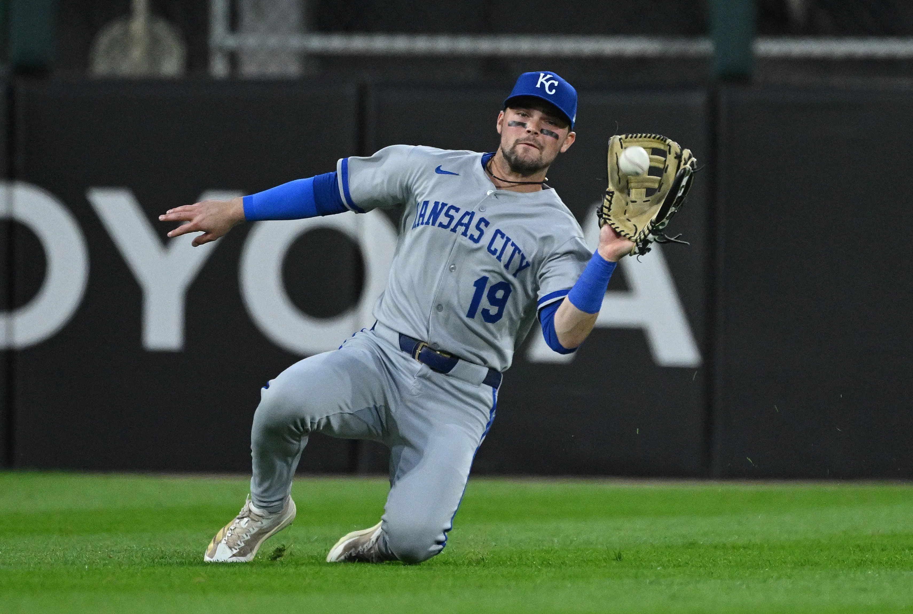
MICHAEL MASSEY
2B & LF
Kansas City Royals
Michael's strength and conditioning development at BSF built the durability and explosiveness needed to compete daily at the MLB level with the Kansas City Royals.
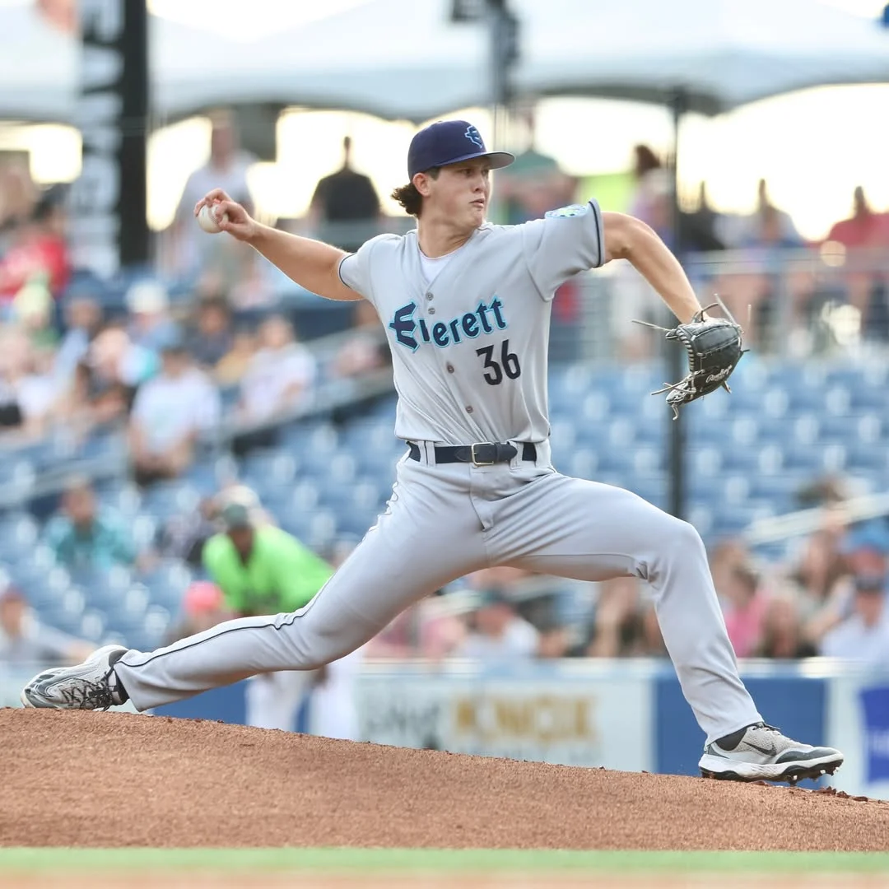
RYAN SLOAN
RHP
Seattle Mariners Organization
Ryan's data-driven development at BSF led to him being selected 55th overall (2nd round) in the 2024 MLB Draft by the Seattle Mariners.
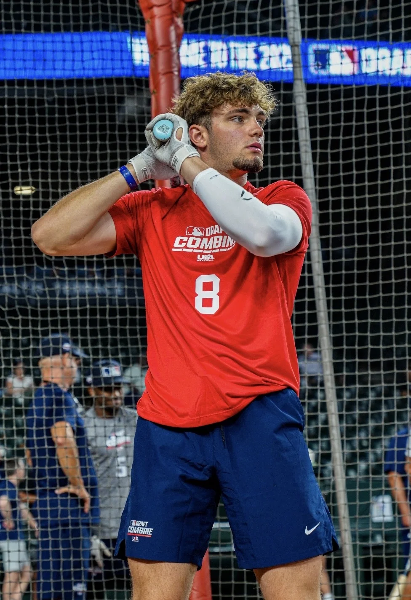
CONOR ESSENBURG
OF
Atlanta Braves Organization
Conor maximized his potential through advanced performance training, earning selection at 157th overall (5th round) in the 2025 MLB Draft.
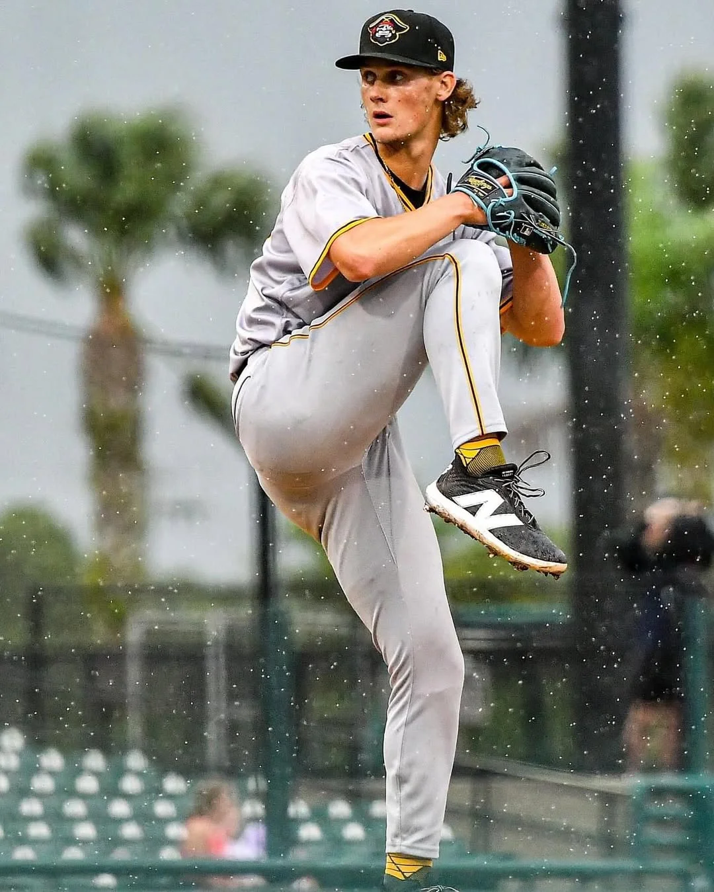
CONNOR OLIVER
LHP
Pittsburgh Pirates Organization
Connor developed his complete arsenal and elite command at BSF, establishing himself as a reliable arm in the Pittsburgh Pirates organization.
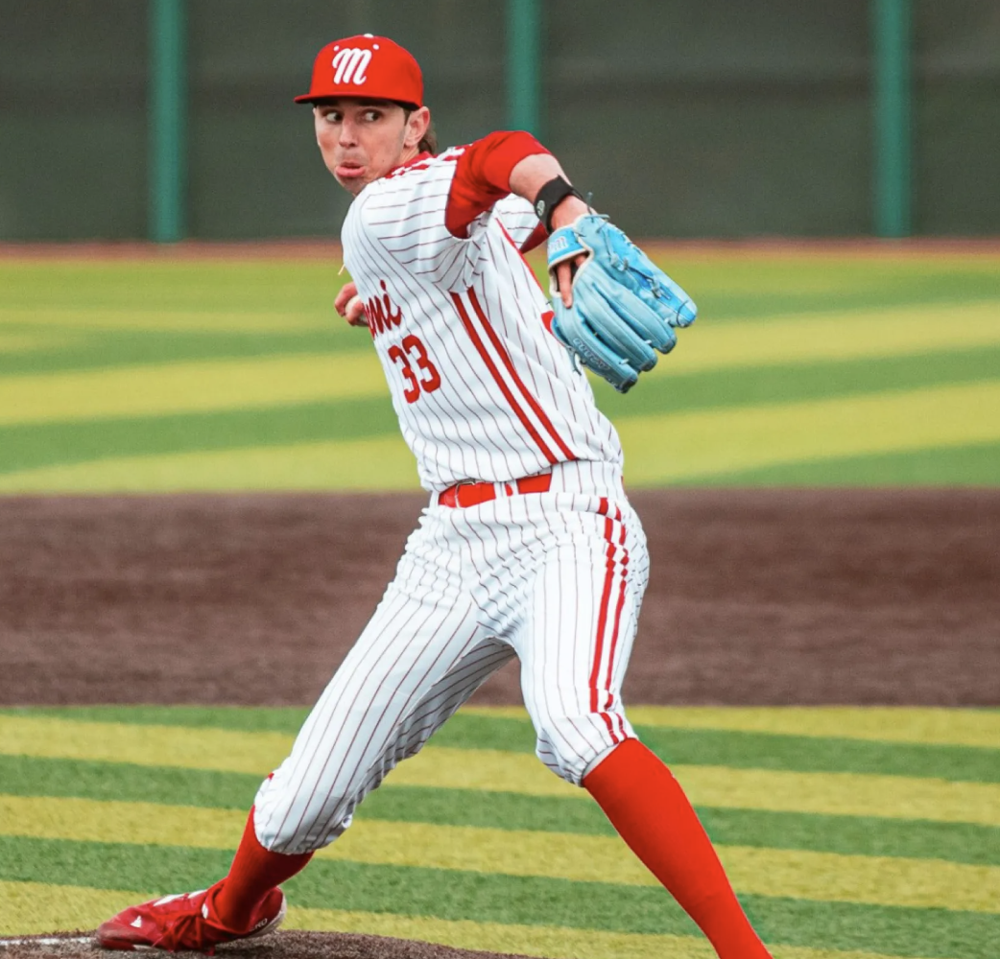
PEYTON OLEJNIK
RHP
Los Angeles Angels Organization
Peyton's individualized development plan at BSF prepared him for professional baseball, leading to his 6th round selection (172nd overall) by the Los Angeles Angels in 2024.
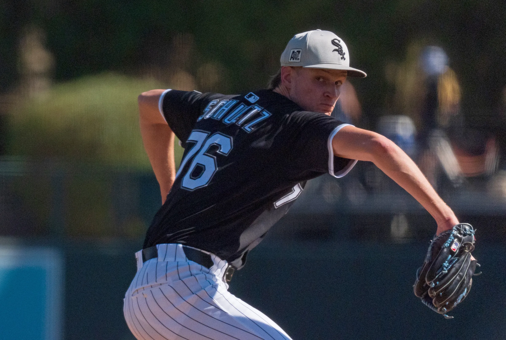
NOAH SCHULTZ
LHP
Chicago White Sox Organization
Noah's strength and conditioning development at BSF built elite velocity and durability, propelling him to 1st round selection (26th overall) by the Chicago White Sox in 2022.
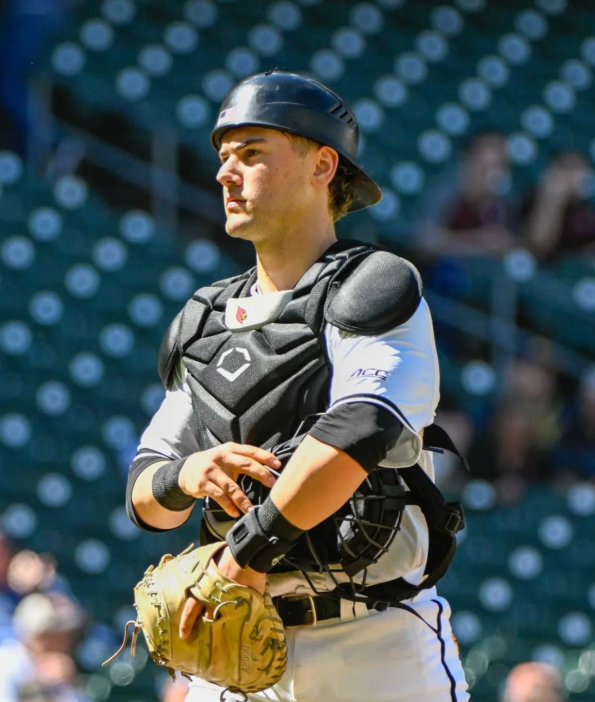
JACK PAYTON
C
San Francisco Giants Organization
Jack's comprehensive strength and conditioning program at BSF improved his arm strength, mobility, and overall athleticism behind the plate for the San Francisco Giants organization.
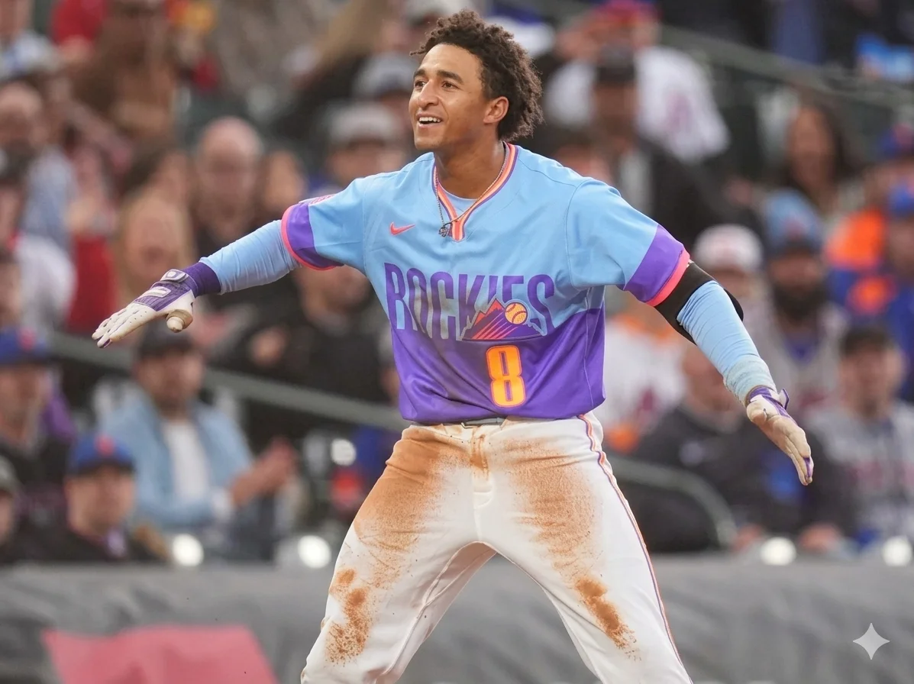
RYAN RITTER
MIF
Colorado Rockies
Ryan's explosive strength development and conditioning at BSF built the athletic foundation that helped him reach the MLB level with the Colorado Rockies.
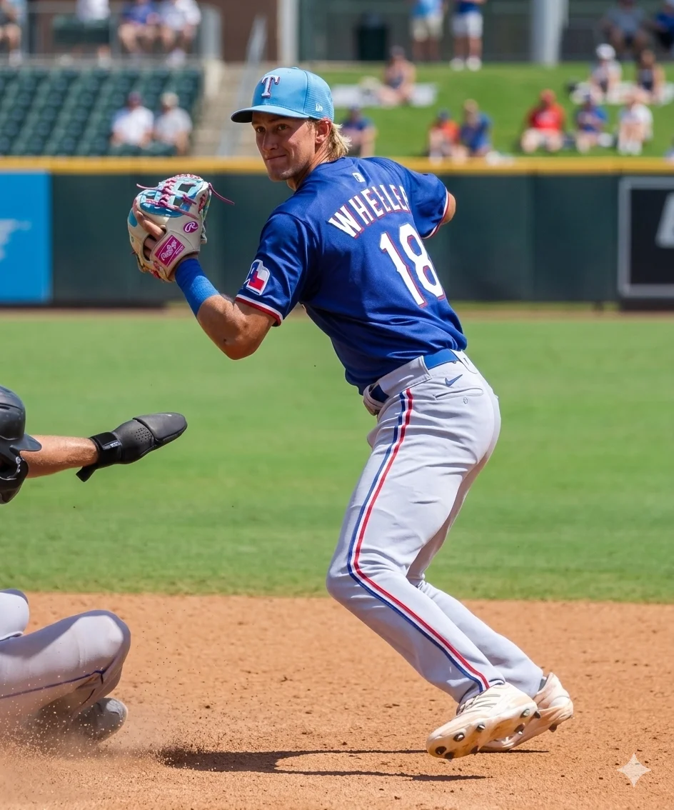
JACK WHEELER
MIF
Texas Rangers Organization
Jack's development at BSF focused on advanced strength and conditioning work to build the athleticism and durability required, earning him 6th round selection (175th overall) by the Texas Rangers in 2025.

ERIC STOUT
LHP
Chicago Cubs
Eric joined BSF seeking guidance on routines and velocity development as a hybrid athlete already competing at the MLB level. Utilizing both in-person training and remote programming, he maximized his development to sustain his professional baseball career.
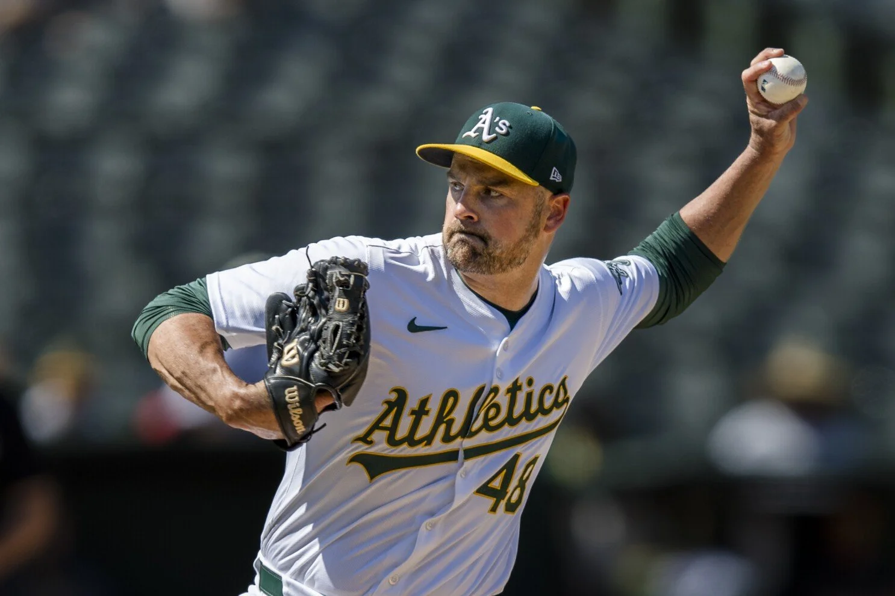
T.J. MCFARLAND
LHP
Athletics
T.J. extended his MLB career through refined pitching strategies and biomechanical adjustments at BSF, continuing to compete at the highest level with over a decade of professional experience.
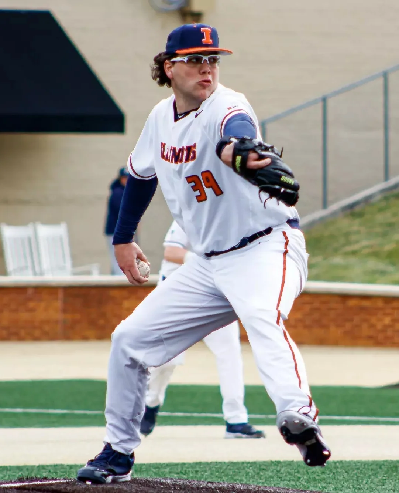
JACK CROWDER
RHP
Baltimore Orioles Organization
Jack's personalized training plan maximized his power arsenal, developing a 95-98 mph fastball with a high-spin slider that makes him a key arm in the Baltimore Orioles organization.
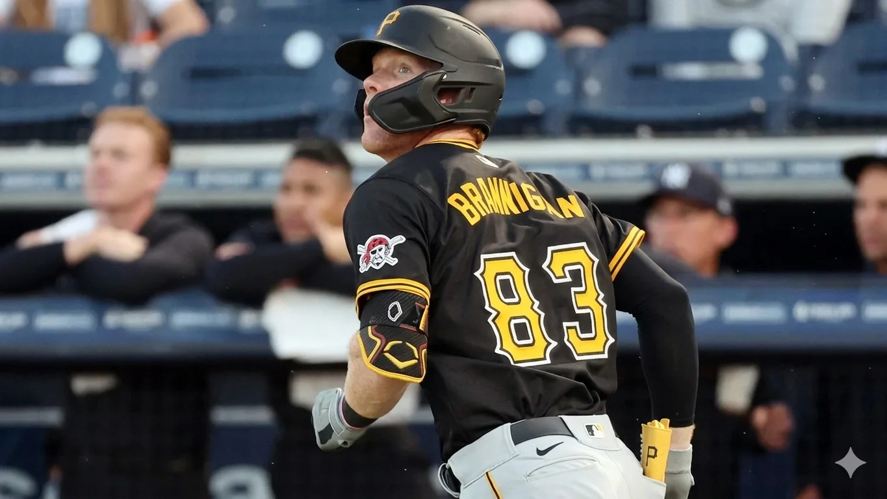
JACK BRANNIGAN
MIF & 3B
Pittsburgh Pirates
Jack's strength and conditioning work at BSF built the power and explosiveness needed for MLB, earning a spot on the Pittsburgh Pirates 40-man roster.
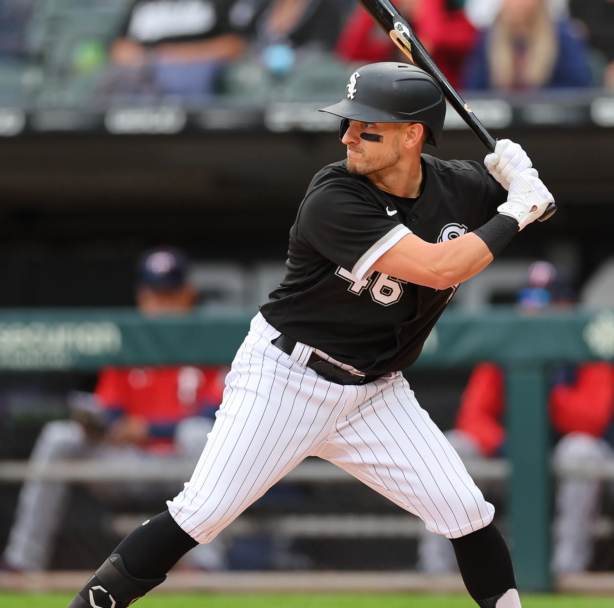
MARK PAYTON
OF
Cincinnati Reds & Chicago White Sox
Mark made his MLB debut in August 2020 after developing elite speed, explosiveness, and conditioning at BSF, competing at the highest level with both the Cincinnati Reds and Chicago White Sox.